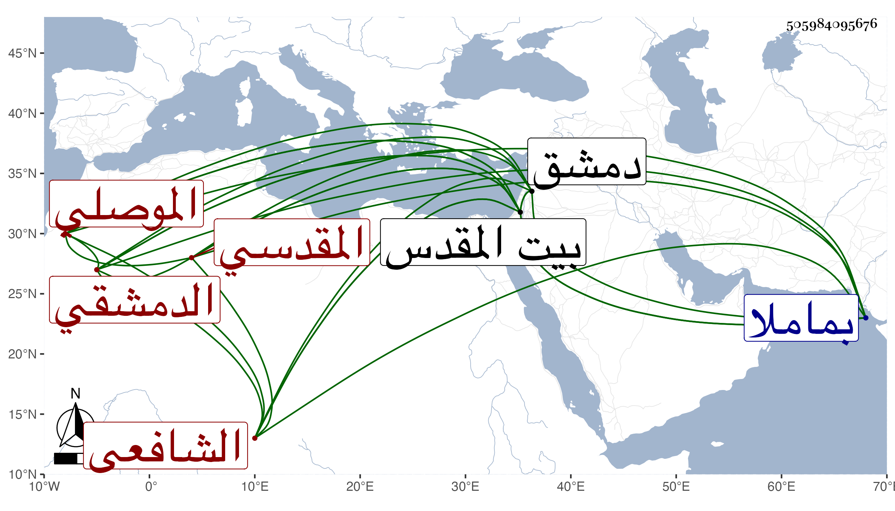

0902Sakhawi.DawLamic.ITO20230111-ara1.EIS1600.505984095676
Biography ID: 505984095676
314
عبد الملك بن أبي بكر بن علي بن عبد الله بن علي الموصلي الأصل ثم الدمشقي المقدسي الشافعي المذكور أبوه في الدرر وغيرها والماضي ولده في الأحمدين . ولد بدمشق ونشأ بها وأخذ عن أبيه وتحول بعده إلى بيت المقدس فأخذ عن ابن الناصح وغيره وعمل مقدمة في الفقه ورسالة في التصوف وغير ذلك ومن نظمه في مطلع قصيدة :
| أنثر بطيبة وأنظم أطيب الكلم | وأنزل بها ثم يمم سيد الأمم |
وهو ممن قرض السيرة المؤيدة لابن ناهض وأخذ عنه الأكابر وهرعوا لزيارته والأخذ عنه والاستشفاع به وكان الشهاب بن رسلان يجله ويدل عليه من يروم أخذ الطريق وله ذكر في ترجمته ، وحج مرارا ومات في سنة أربع وأربعين ببيت المقدس ودفن عند أبيه بماملا وقد نقل شيخنا في سنة سبع وتسعين من إنبائه في ترجمة أبيه عنه شيئا رحمه الله وإيانا .
